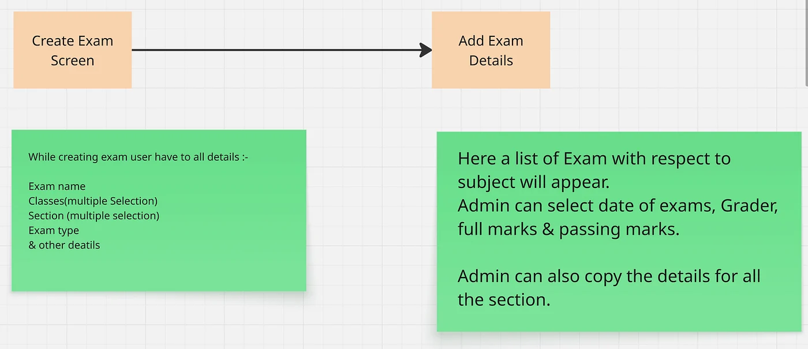
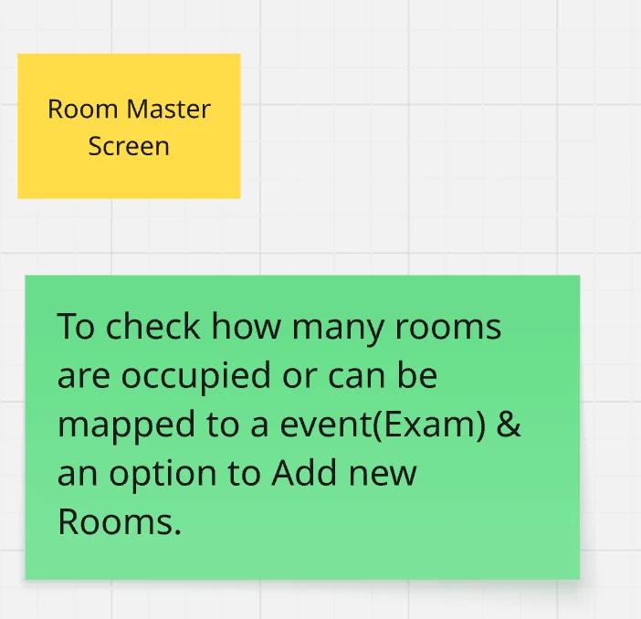
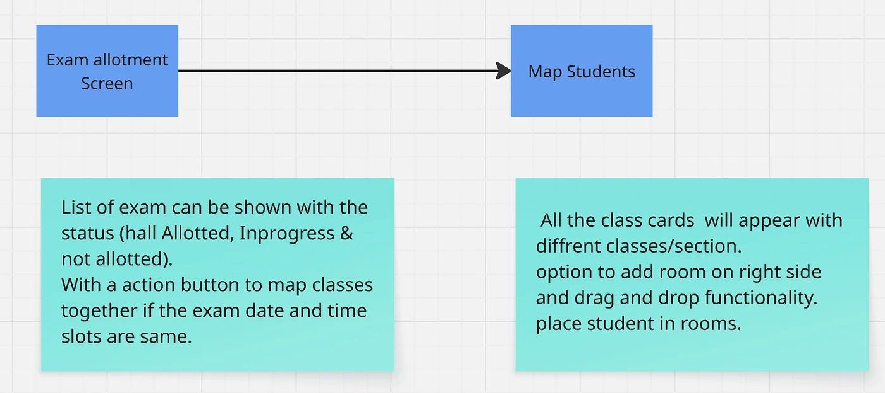
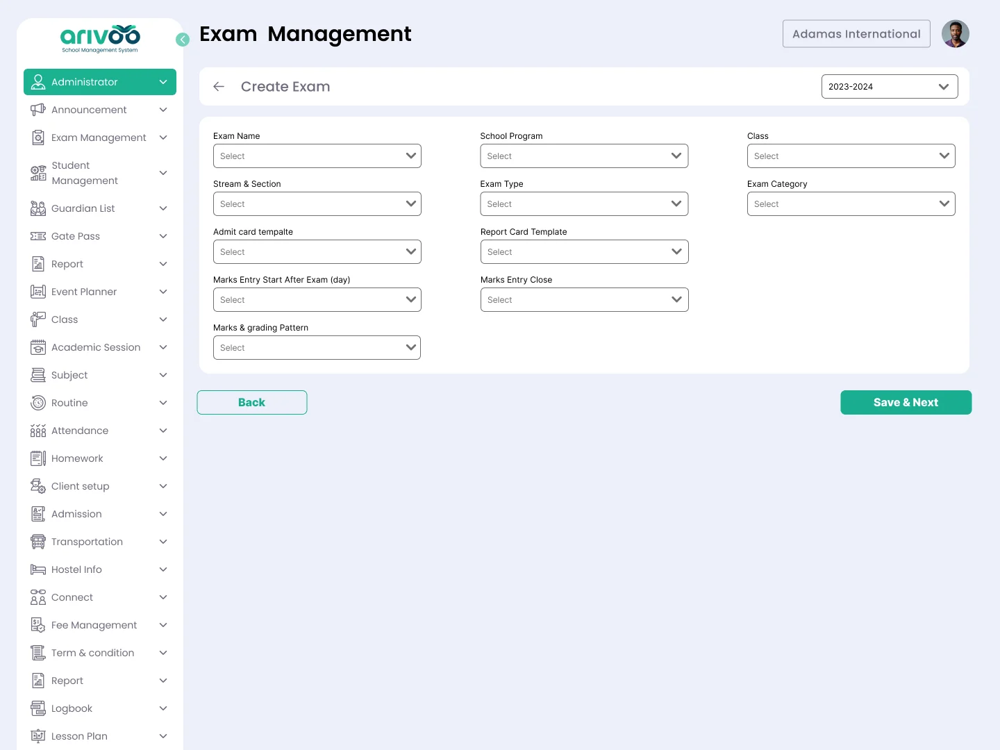
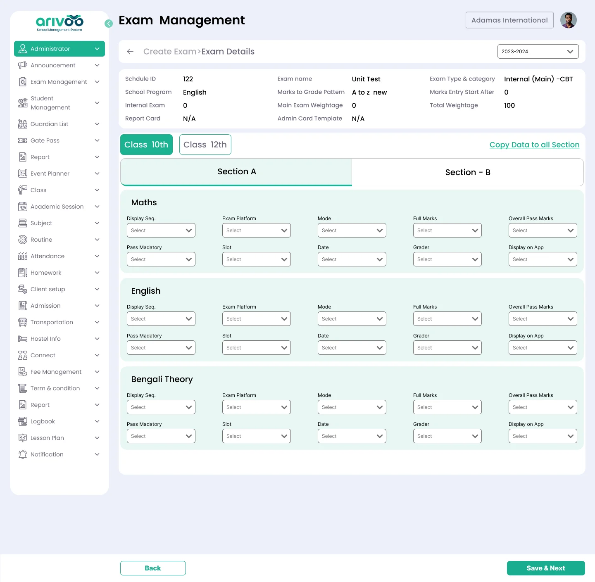
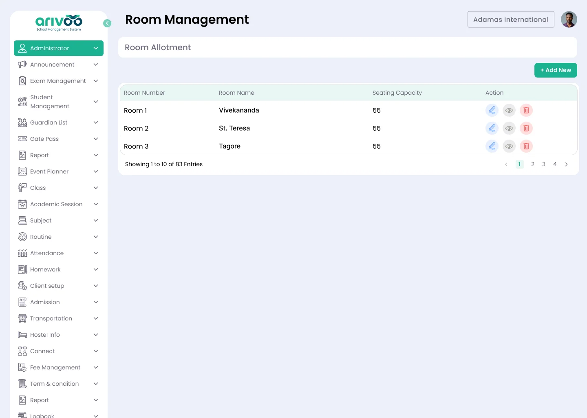
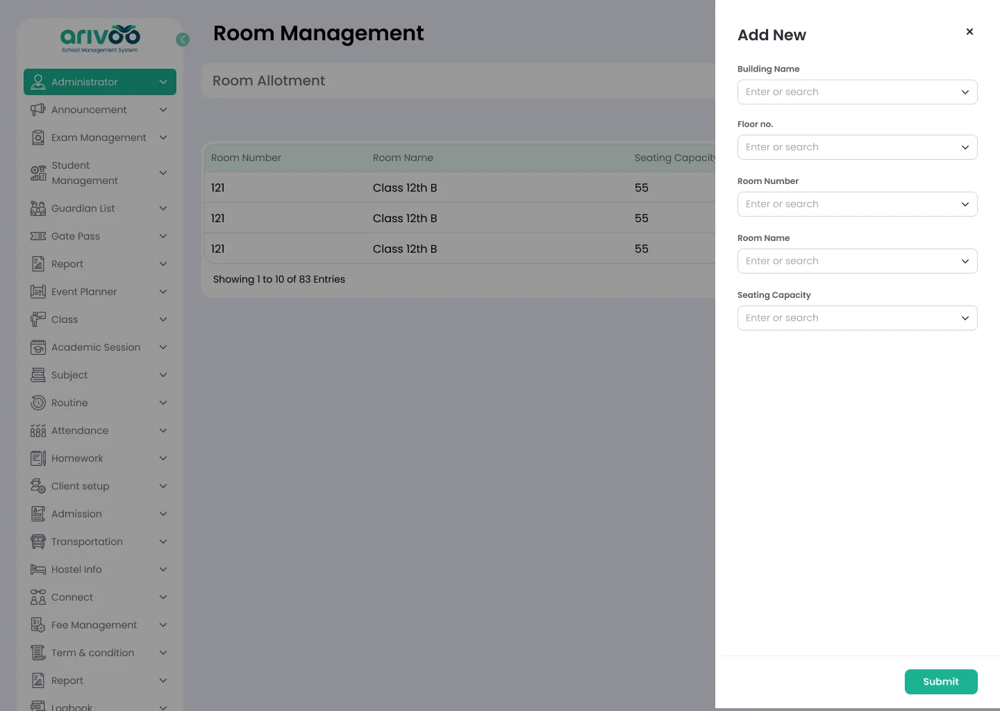
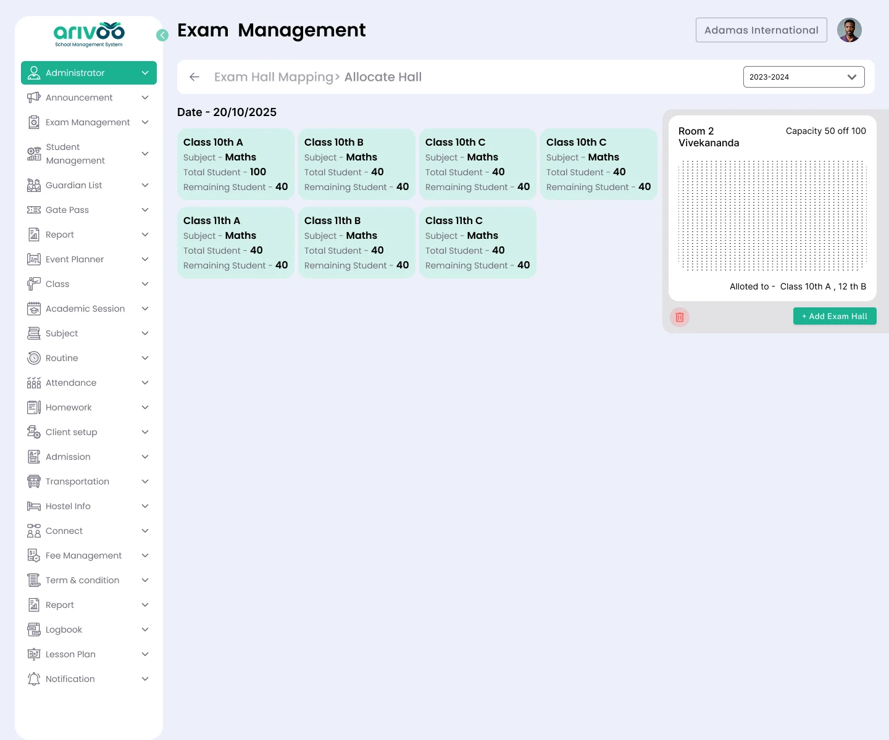
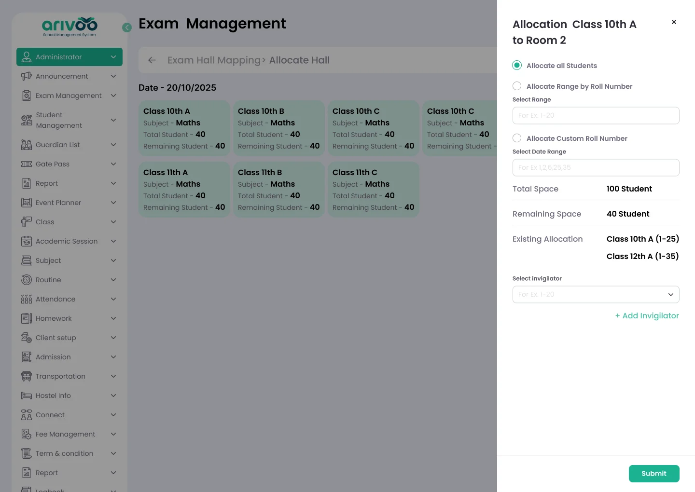

While working on Arivoo School Management System, I ran into a genuinely interesting problem: how schools actually run an exam, end to end — and how much of it could be taken off someone's plate.
The problem
Conducting an exam meant a school admin manually building a date sheet, generating admit cards, allocating invigilators, and mapping students to exam centres. All of it by hand, for every exam, every term.
Talking to the admins doing this, a few things stood out:
- Exams come in different types — a unit test and a half-yearly exam don't share a marking scheme — and a date sheet has to go out a month in advance, class by class and subject by subject.
- Classes with clashing subjects have to be mapped together deliberately. If Class 10 has a maths exam, it needs to be scheduled alongside a class sitting a different subject, not another maths paper.
- There was no real way to tell an invigilator which centre they'd been assigned to. More than once, that meant a last-minute phone call.
- Rooms could simply run out of space: Class 10 might have 57 students and Class 8 another 48, but a hall only seats 50 (two to a bench). Nobody had a clean way to see that coming.
Working through it
The starting point was letting an admin build a date sheet around exactly which classes needed to sit together — asking for the exam name, the classes and sections involved (multiple selections, not one at a time), and the rest of the exam's details in one pass. If Class 10 has five sections and Class 12 has four, four pairs are obvious and the fifth section either shares a class or gets its own sitting — the tool has to make that visible, not leave it to memory.

Room allocation needed the same visibility: a running picture of which rooms exist, how many seats each one has, and what's already been assigned to it before another class gets mapped in.

And once rooms and exams both exist, the last step is putting students into seats — by class and section, with invigilators assigned to the room they'll actually be standing in.

The screens
Exam creation and scheduling — the exam's details on one side, and the per-section, per-subject grading setup (platform, mode, marks, grader, slot) on the other, with a shortcut to copy a section's setup to every other section sitting the same exam.


Exam creation & scheduling screen.
Room master — every room the school has, with its seating capacity, plus a simple form to add a new one when a hall is missing from the list.


Room master screens.
Student mapping — every class waiting for a seat, how many of its students are already placed, and a room-by-room view of who's been allotted where, down to which range of roll numbers or which invigilator covers that room.


Student mapping screen.
It took about two weeks to land on this, final UI included. There may well be a cleaner way to solve it — if you've got one, I'd like to hear it.
Originally published on Medium. Ping me at ankit.yadav383@gmail.com.